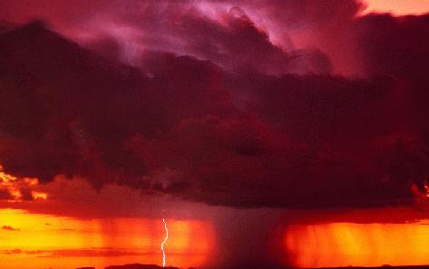

Astronomy 511 Weather Page

For information on present and predicted weather conditions, check the
following websites:
Hour-by-Hour CV
Observing Forecast (A. Danko)
Hour-by-Hour for Other
Sites
Current Conditions at McCormick Observatory
Charlottesville Forecast (NOAA)
Regional Radar (Current)
Regional Satellite (Current)
Regional Precipitation Estimate
Regional Forecast
Stargazer Forecast on Intellicast
Virginia State
Climatology Office
 Return to ASTR 511 Home Page
Return to ASTR 511 Home Page
Last modified
September 2015 by rwo